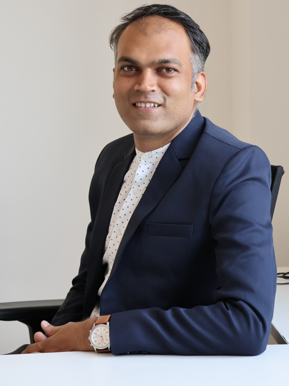
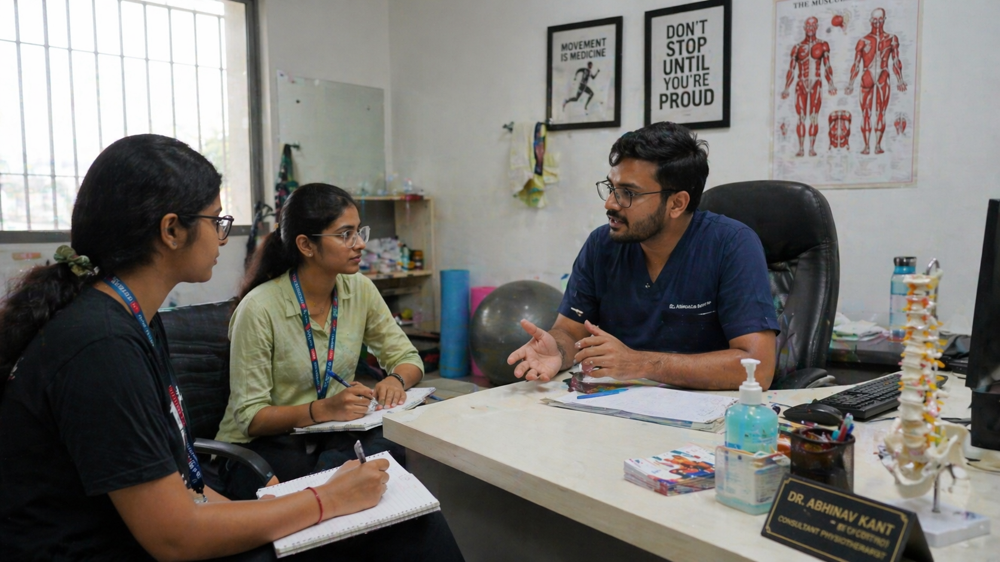

Designing
by Inquiry.
Teaching
by Process.
I build design thinkers — students who observe carefully, frame problems honestly, and design with intent. My teaching draws equally from academic rigour and the realities of product work.

"Good design starts before the screen — with observation, honest framing, and the willingness to sit with a problem until it becomes clear."
Academic & Professional Journey
Education
- 2026 — PursuingPhD in DesignSymbiosis International UniversityGenerative AI & Design Education
- 2017Senior FellowshipNanjing University of Arts, ChinaJiangsu Jasmine Scholarship
- 2016Master of Fine Arts (MFA)Visva-Bharati University, Santiniketan
- 2014Bachelor of Fine Arts (BFA)Sir J. J. School of Art, Mumbai
- 2019UGC-NET QualifiedDesign
Career
- 2024 – PresentAssistant ProfessorMIT Vishwaprayag University, SolapurUI/UX · Interaction Design · Research Methods
- 2024 — 4 MonthsSr. UI/UX DesignerCalfus Technologies, PuneIndustry
- 2021 – 2024Assistant ProfessorSymbiosis Institute of Design, Pune
- 2018 – 2021Assistant ProfessorMIT-WPU, Pune
What I Teach & Know
Own UX Projects
Empathetic Social Media Platform
An end-to-end UX project exploring how a social platform can be designed around user wellbeing rather than engagement loops — built from primary research and user interviews.
- Platforms designed for engagement, not wellbeing
- Emotional fatigue and passive scrolling
- Need for intentional, user-controlled interaction
- User interviews + secondary research
- Persona & user journey mapping
- Information architecture + feature structuring
- Wireframes → design system → mobile UI
- Personas & journey maps
- IA diagram
- Hi-fi mobile screens
- Interactive prototype


 class="img-handloom-main">
class="img-handloom-main">
User Interface Design Project
Designed to enhance the online shopping experience — customers can upload their own photo to virtually try on outfits, and choose from a full customisable colour palette to make every dress uniquely theirs.

Local Grocery Shopkeepers Study
A field-based UX research study into the kirana store ecosystem — mapping owner workflows, customer behaviour, and service gaps through direct contextual observation.
Industry Experience
I worked on two products here. The first was an e-commerce platform where I designed the flow for how sellers list their products — making the process feel logical, the information well-organised, and products easy for buyers to find and filter. The second was a banking dashboard that let users view account balances across multiple banks and countries — the focus was on presenting a lot of financial information without overwhelming the user.

Customer Management Dashboard
Teaching UX without knowing how a real product team works is like teaching cooking without ever entering a kitchen. This experience showed me how design decisions get made under pressure — sprint timelines, stakeholder feedback, technical constraints, and constant tradeoffs. I now build those realities directly into the briefs I give students. When I ask them to consider feasibility or prioritise features, I am drawing from actual experience, not theory.
How I Teach Design
Every module follows the same discipline — students go into the field before they open a design tool.
Projects I Mentored
All briefs designed and facilitated by me. The work belongs to my students — I contributed the structure, the questions, and the process.


Handloom Weaver Study — Solapur
Weavers work in extended floor-level postures for hours with limited back support — leading to chronic physical strain with few affordable solutions.
Documented posture patterns and ergonomic pain points through field observation. Developed low-cost design proposals addressing weavers' working conditions.
Sitting with weavers in the field built genuine empathy — and a sharper sense of what human-centred design actually means when the user's reality is nothing like your own.

Physiotherapy Clinic & WFH Ergonomics
Work-from-home setups rarely account for long-term posture health. Students began at a physiotherapy clinic — interviewing a doctor, observing patients — then traced the problem back to the domestic environment.
Built user personas from clinical observations. Proposed affordable ergonomic interventions for WFH contexts, grounded in actual medical insight.
Students developed sensitivity to invisible suffering — the kind that builds quietly over time — and a responsibility to design solutions that are genuinely accessible.

System of the Indian Bus Stand
Roadside vendors operate with no formal infrastructure — managing stock, transactions, and customers while navigating spatial uncertainty every day.
Mapped the vendor's world as a system — spatial flow, stakeholder interactions, friction points — and identified practical design opportunities without disrupting existing methods.
Students began to see complexity, resilience, and dignity in the informal economy. The project shifted their definition of who design is for — and that shift stays with them.
All work by student teams · MIT Vishwaprayag University, Solapur · 2024–25
Academic Contributions
Research & Publications
- PhD (Design) · Pursuing 2026
Generative AI & Design Education — SIU - IPDIMS 2024 — International Conference
"Advancing Elderly Care Sustainability: AI & Real-Time Stories" - Design Patent Filed
Suppository applicator design for children - Illustrations published — "The People Called Kolkata"
Curriculum Contributions
- Designed Design Thinking for Sustainability and AI for All
- Developed UI Design curriculum for MCA students
- Foundation modules: Elements of Design, Sketching, Art & Culture
- Contributed to BoS processes and program outcome frameworks
- Activity-based rubric-driven assessment design
Certifications
Design education, at its best, does not teach students what to make — it teaches them how to see. That is what I am here to do.
Connect with Me